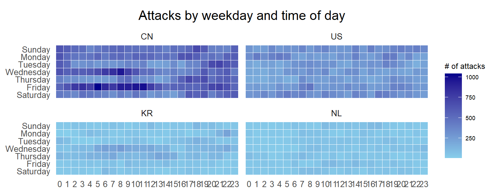
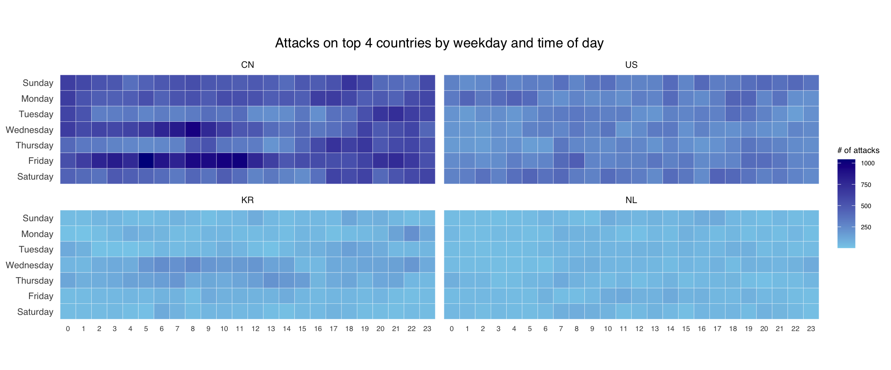
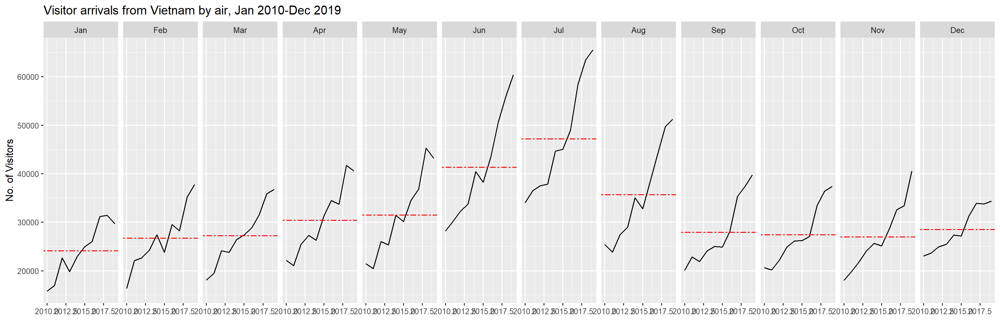
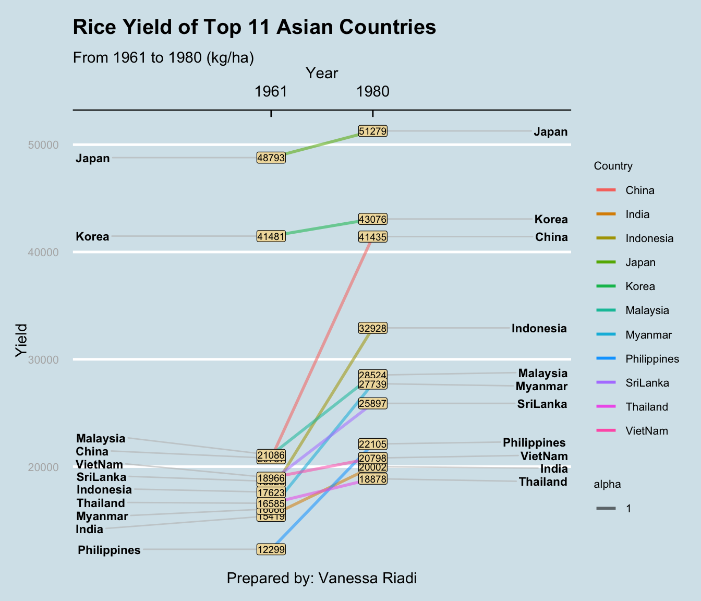

pacman::p_load(scales, viridis, lubridate, ggthemes,
gridExtra, readxl, knitr, data.table,
CGPfunctions, ggHoriPlot, tidyverse)Visualising and Analysing Time-oriented Data
5.1 Learning Outcome
We will learn how to create the followings using R visualisation in this hands-on exercise:
plotting a calender heatmap by using ggplot2 functions,
plotting a cycle plot by using ggplot2 function,
plotting a slopegraph
plotting a horizon chart
5.2 Getting Started
5.2.1 Installing and launching R packages
We will install and launch the following R packages: scales, viridis, lubridate, ggthemes, gridExtra, readxl, knitr, data.table and tidyverse.
5.3 Plotting Calendar Heatmap
In this section, you will learn how to:
- plot a calender heatmap by using ggplot2 functions and extension,
- write function using R programming,
- derive specific date and time related field by using base R and lubridate packages
- perform data preparation task by using tidyr and dplyr packages.
Example of a calender heatmap programmatically by using ggplot2 package:

5.3.1 The Data
For the purpose of this hands-on exercise, eventlog.csv file will be used. This data file consists of 199,999 rows of time-series cyber attack records by country.
First we import eventlog.csv file into R environment and called the data frame as attacks.
attacks <- read_csv("../data/eventlog.csv")5.3.2 Examining the data structure
It is always a good practice to examine the imported data frame before further analysis is performed.
For example, kable() can be used to review the structure of the imported data frame.
kable(head(attacks))| timestamp | source_country | tz |
|---|---|---|
| 2015-03-12 15:59:16 | CN | Asia/Shanghai |
| 2015-03-12 16:00:48 | FR | Europe/Paris |
| 2015-03-12 16:02:26 | CN | Asia/Shanghai |
| 2015-03-12 16:02:38 | US | America/Chicago |
| 2015-03-12 16:03:22 | CN | Asia/Shanghai |
| 2015-03-12 16:03:45 | CN | Asia/Shanghai |
There are three columns, namely timestamp, source_country and tz.
- timestamp field stores date-time values in POSIXct format.
- source_country field stores the source of the attack. It is in ISO 3166-1 alpha-2 country code.
- tz field stores time zone of the source IP address.
5.3.3 Data Preparation
Step 1: Deriving weekday and hour of day fields
Before we can plot the calender heatmap, two new fields namely weekday and hour need to be derived. In this step, we will write a function to perform the task.
make_hr_wkday <- function(ts, sc, tz) {
real_times <- ymd_hms(ts,
tz = tz[1],
quiet = TRUE)
dt <- data.table(source_country = sc,
weekday = weekdays(real_times),
hour = hour(real_times))
return(dt)
}
Note
ymd_hms()andhour()are from lubridate package, andweekdays()is a base R function.
Cheatsheet for lubridate here
Step 2: Deriving the attacks tibble data frame
weekday_levels <- c('Saturday', 'Friday',
'Thursday', 'Wednesday',
'Tuesday', 'Monday',
'Sunday')
attacks <- attacks %>%
group_by(tz) %>%
do(make_hr_wkday(.$timestamp,
.$source_country,
.$tz)) %>%
ungroup() %>%
mutate(weekday = factor(
weekday, levels = weekday_levels),
hour = factor(
hour, levels = 0:23))
Note
Beside extracting the necessary data into attacks data frame, mutate() of dplyr package is used to convert weekday and hour fields into factor so they’ll be ordered when plotting
Table below shows the tidy tibble table after processing.
kable(head(attacks))| tz | source_country | weekday | hour |
|---|---|---|---|
| Africa/Cairo | BG | Saturday | 20 |
| Africa/Cairo | TW | Sunday | 6 |
| Africa/Cairo | TW | Sunday | 8 |
| Africa/Cairo | CN | Sunday | 11 |
| Africa/Cairo | US | Sunday | 15 |
| Africa/Cairo | CA | Monday | 11 |
5.3.4 Building the Calendar Heatmaps
NOTE: Using size aesthetic for lines was deprecated in ggplot2 3.4.0. So we will use use linewidth instead.
grouped <- attacks %>%
count(weekday, hour) %>%
ungroup() %>%
na.omit()
ggplot(grouped,
aes(hour,
weekday,
fill = n)) +
geom_tile(color = "white",
#size = 0.1) + USE LINEWIDTH INSTEAD!!!
linewidth = 0.1) +
theme_tufte(base_family = "Helvetica") +
coord_equal() +
scale_fill_gradient(name = "# of attacks",
low = "sky blue",
high = "dark blue") +
labs(x = NULL,
y = NULL,
title = "Attacks by weekday and time of day") +
theme(axis.ticks = element_blank(),
plot.title = element_text(hjust = 0.5),
legend.title = element_text(size = 8),
legend.text = element_text(size = 6) )
Things to learn from the code chunk
- a tibble data table called grouped is derived by aggregating the attack by weekday and hour fields.
- a new field called n is derived by using
group_by()andcount()functions. na.omit()is used to exclude missing value.geom_tile()is used to plot tiles (grids) at each x and y position.colorandlinewidtharguments are used to specify the border color and line size of the tiles.theme_tufte()of ggthemes package is used to remove unnecessary chart junk. To learn which visual components of default ggplot2 have been excluded, you are encouraged to comment out this line to examine the default plot.coord_equal()is used to ensure the plot will have an aspect ratio of 1:1.scale_fill_gradient()function is used to creates a two colour gradient (low-high).
Then we can simply group the count by hour and weekday and plot it, since we know that we have values for every combination there’s no need to further preprocess the data.
5.3.5 Building Multiple Calendar Heatmaps
Challenge: Building multiple heatmaps for the top four countries with the highest number of attacks.
EXAMPLE: 
5.3.6 Plotting Multiple Calendar Heatmaps
Step 1: Deriving attack by country object
In order to identify the top 4 countries with the highest number of attacks, you are required to do the followings:
- count the number of attacks by country,
- calculate the percent of attackes by country, and
- save the results in a tibble data frame.
attacks_by_country <- count(
attacks, source_country) %>%
mutate(percent = percent(n/sum(n))) %>%
arrange(desc(n))Step 2: Preparing the tidy data frame
In this step, you are required to extract the attack records of the top 4 countries from attacks data frame and save the data in a new tibble data frame (i.e. top4_attacks).
top4 <- attacks_by_country$source_country[1:4]
top4_attacks <- attacks %>%
filter(source_country %in% top4) %>%
count(source_country, weekday, hour) %>%
ungroup() %>%
mutate(source_country = factor(
source_country, levels = top4)) %>%
na.omit()5.3.7 Plotting Multiple Calendar Heatmaps
Step 3: Plotting the Multiple Calender Heatmap by using ggplot2 package.
ggplot(top4_attacks,
aes(hour,
weekday,
fill = n)) +
geom_tile(color = "white",
size = 0.1) +
theme_tufte(base_family = "Helvetica") +
coord_equal() +
scale_fill_gradient(name = "# of attacks",
low = "sky blue",
high = "dark blue") +
facet_wrap(~source_country, ncol = 2) +
labs(x = NULL, y = NULL,
title = "Attacks on top 4 countries by weekday and time of day") +
theme(axis.ticks = element_blank(),
axis.text.x = element_text(size = 7),
plot.title = element_text(hjust = 0.5),
legend.title = element_text(size = 8),
legend.text = element_text(size = 6) )
5.4 Plotting Cycle Plot
In this section, you will learn how to plot a cycle plot showing the time-series patterns and trend of visitor arrivals from Vietnam programmatically by using ggplot2 functions.
EXAMPLE 
5.4.1 Step 1: Data Import
For the purpose of this hands-on exercise, arrivals_by_air.xlsx will be used.
The code chunk below imports arrivals_by_air.xlsx by using read_excel() of readxl package and save it as a tibble data frame called air.
air <- read_excel("../data/arrivals_by_air.xlsx")| Month-Year | Republic of South Africa | Canada | USA | Bangladesh | Brunei | China | Hong Kong SAR (China) | India | Indonesia | Japan | South Korea | Kuwait | Malaysia | Myanmar | Pakistan | Philippines | Saudi Arabia | Sri Lanka | Taiwan | Thailand | United Arab Emirates | Vietnam | Belgium & Luxembourg | CIS | Finland | France | Germany | Ireland | Italy | Netherlands | Spain | Switzerland | United Kingdom | Australia | New Zealand |
|---|---|---|---|---|---|---|---|---|---|---|---|---|---|---|---|---|---|---|---|---|---|---|---|---|---|---|---|---|---|---|---|---|---|---|---|
| 2000-01-01 | 3291 | 5545 | 25906 | 2883 | 3749 | 33895 | 13692 | 19235 | 65151 | 59288 | 21457 | 507 | 27472 | 1177 | 2150 | 8404 | 1312 | 3922 | 15766 | 12048 | 1318 | 1527 | 1434 | 2703 | 1634 | 4752 | 12739 | 1292 | 3544 | 4962 | 925 | 3731 | 28986 | 34616 | 5034 |
| 2000-02-01 | 2357 | 6120 | 28262 | 2469 | 3236 | 34344 | 19870 | 18975 | 37105 | 58188 | 19634 | 199 | 29084 | 1161 | 2496 | 9128 | 623 | 3988 | 24861 | 12745 | 899 | 2269 | 1596 | 1182 | 1297 | 6391 | 13093 | 1200 | 2897 | 5054 | 747 | 3980 | 35148 | 26030 | 3938 |
| 2000-03-01 | 4036 | 6255 | 30439 | 2904 | 3342 | 27053 | 17086 | 21049 | 44205 | 74426 | 20719 | 386 | 30504 | 1355 | 2429 | 11691 | 1578 | 4259 | 18767 | 16971 | 1474 | 2034 | 1548 | 1088 | 1220 | 5528 | 13645 | 1368 | 2717 | 4950 | 935 | 3576 | 36117 | 31119 | 4668 |
| 2000-04-01 | 4241 | 4521 | 25378 | 2843 | 5117 | 30464 | 22346 | 26160 | 45480 | 49985 | 17489 | 221 | 34478 | 1593 | 2711 | 14141 | 705 | 6579 | 22735 | 20397 | 1284 | 2420 | 1592 | 1012 | 1208 | 5544 | 13366 | 1345 | 2512 | 4149 | 941 | 3850 | 33792 | 34824 | 6890 |
| 2000-05-01 | 2841 | 3914 | 26163 | 2793 | 4152 | 30775 | 16357 | 35869 | 38350 | 48937 | 19398 | 164 | 34795 | 1397 | 2594 | 13305 | 679 | 4625 | 18399 | 15769 | 1042 | 1833 | 1167 | 660 | 743 | 4225 | 10878 | 1067 | 2205 | 3643 | 764 | 3025 | 23377 | 33139 | 7006 |
| 2000-06-01 | 2776 | 3487 | 28179 | 3146 | 5018 | 26720 | 18133 | 31314 | 47982 | 53798 | 17522 | 440 | 34660 | 1715 | 2924 | 10555 | 2749 | 4740 | 21042 | 17217 | 1545 | 2480 | 1170 | 712 | 982 | 4047 | 9054 | 1363 | 2196 | 3544 | 855 | 2580 | 21769 | 35731 | 7634 |
5.4.2 Step 2: Deriving month and year fields
Next, two new fields called month and year are derived from Month-Year field.
air$month <- factor(month(air$`Month-Year`),
levels=1:12,
labels=month.abb,
ordered=TRUE)
air$year <- year(ymd(air$`Month-Year`))5.4.3 Step 4: Extracting the target country
Next, the code chunk below is use to extract data for the target country (i.e. Vietnam)
Vietnam <- air %>%
select(`Vietnam`,
month,
year) %>%
filter(year >= 2010)| Vietnam | month | year |
|---|---|---|
| 15781 | Jan | 2010 |
| 16335 | Feb | 2010 |
| 18061 | Mar | 2010 |
| 22154 | Apr | 2010 |
| 21461 | May | 2010 |
| 28146 | Jun | 2010 |
5.4.4 Step 5: Computing year average arrivals by month
The code chunk below uses group_by() and summarise() of dplyr to compute year average arrivals by month.
hline.data <- Vietnam %>%
group_by(month) %>%
summarise(avgvalue = mean(`Vietnam`))| month | avgvalue |
|---|---|
| Jan | 24113.4 |
| Feb | 26693.4 |
| Mar | 27200.1 |
| Apr | 30390.8 |
| May | 31452.9 |
| Jun | 41325.3 |
5.4.5 Step 6: Plotting the cycle plot
The code chunk below is used to plot the cycle plot as shown in Slide 12/23.
ggplot() +
geom_line(data=Vietnam,
aes(x = as.factor(year),
y=`Vietnam`,
group=month),
colour="black") +
geom_hline(aes(yintercept=avgvalue),
data=hline.data,
linetype=6,
colour="red",
linewidth=0.5) +
facet_grid(~month) +
facet_wrap(~month, nrow = 2) +
labs(axis.text.x = element_blank(),
title = "Visitor arrivals from Vietnam by air, Jan 2010-Dec 2019") +
xlab("") +
ylab("No. of Visitors") +
theme_grey(base_family = "Helvetica") +
theme(axis.text.x = element_text(hjust = 1, angle = 90, vjust = 0.5, size = 6),
axis.text.y = element_text(size = 6),) 
ggplot() +
geom_line(data=Vietnam,
aes(x=year,
y=`Vietnam`,
group=month),
colour="black") +
geom_hline(aes(yintercept=avgvalue),
data=hline.data,
linetype=6,
colour="red",
linewidth=0.5) +
facet_grid(~month) +
labs(axis.text.x = element_blank(),
title = "Visitor arrivals from Vietnam by air, Jan 2010-Dec 2019") +
xlab("") +
ylab("No. of Visitors") +
theme_tufte(base_family = "Helvetica")
5.5 Plotting Slopegraph
In this section you will learn how to plot a slopegraph by using R.
Before getting start, make sure that CGPfunctions has been installed and loaded onto R environment. Then, refer to Using newggslopegraph to learn more about the function. Lastly, read more about newggslopegraph() and its arguments by referring to this link.
5.5.1 Step 1: Data Import
Import the rice data set into R environment by using the code chunk below.
rice <- read_csv("../data/rice.csv")| Country | Year | Yield | Production |
|---|---|---|---|
| China | 1961 | 20787 | 56217601 |
| China | 1962 | 23700 | 65675288 |
| China | 1963 | 26833 | 76439280 |
| China | 1964 | 28289 | 85853780 |
| China | 1965 | 29667 | 90705630 |
| China | 1966 | 31445 | 98403990 |
5.5.2 Step 2: Plotting the slopegraph
Next, code chunk below will be used to plot a basic slopegraph as shown below.
rice %>%
mutate(Year = factor(Year)) %>%
filter(Year %in% c(1961, 1980)) %>%
newggslopegraph(Year, Yield, Country,
Title = "Rice Yield of Top 11 Asian Countries",
SubTitle = "From 1961 to 1980 (kg/ha)",
Caption = "Prepared by: Vanessa Riadi")
rice %>%
mutate(Year = factor(Year)) %>%
filter(Year %in% c(1961, 1980)) %>%
newggslopegraph(Year, Yield, Country,
Title = "Rice Yield of Top 11 Asian Counties",
SubTitle = "1961-1980",
Caption = "Prepared by: Dr. Kam Tin Seong")
Thing to learn from the code chunk above
For effective data visualisation design, factor() is used convert the value type of Year field from numeric to factor.
🎀 PRACTICE
Let’s practice using the additional dataset!
averp <- read_csv("../data/AVERP.csv")| Date | Consumer Items | Values |
|---|---|---|
| 1/1/2014 | Wholemeal Bread (Per 400 Gram) | 2.05 |
| 1/2/2014 | Wholemeal Bread (Per 400 Gram) | 2.05 |
| 1/3/2014 | Wholemeal Bread (Per 400 Gram) | 2.04 |
| 1/4/2014 | Wholemeal Bread (Per 400 Gram) | 2.04 |
| 1/5/2014 | Wholemeal Bread (Per 400 Gram) | 2.05 |
| 1/6/2014 | Wholemeal Bread (Per 400 Gram) | 2.05 |
averp$month <- factor(month(averp$`Date`),
levels=1:12,
labels=month.abb,
ordered=TRUE)
averp$year <- year(dmy(averp$`Date`))Let’s check out white bread price across the months and year!
whiteBread <- averp %>%
select(year,
month,
`Consumer Items`,
Values) %>%
filter(`Consumer Items` == "Ordinary White Bread (Per 400 Gram)")kable(head(whiteBread))| year | month | Consumer Items | Values |
|---|---|---|---|
| 2014 | Jan | Ordinary White Bread (Per 400 Gram) | 1.56 |
| 2014 | Feb | Ordinary White Bread (Per 400 Gram) | 1.56 |
| 2014 | Mar | Ordinary White Bread (Per 400 Gram) | 1.57 |
| 2014 | Apr | Ordinary White Bread (Per 400 Gram) | 1.57 |
| 2014 | May | Ordinary White Bread (Per 400 Gram) | 1.57 |
| 2014 | Jun | Ordinary White Bread (Per 400 Gram) | 1.57 |
avgline.data <- whiteBread %>%
group_by(month) %>%
summarise(avgvalue = mean(Values, na.rm = TRUE))kable(head(avgline.data))| month | avgvalue |
|---|---|
| Jan | 1.667778 |
| Feb | 1.670000 |
| Mar | 1.671111 |
| Apr | 1.680000 |
| May | 1.684444 |
| Jun | 1.690000 |
ggplot() +
geom_line(data=whiteBread,
aes(x = as.factor(year),
y=Values,
group=month),
colour="black") +
geom_hline(aes(yintercept=avgvalue),
data=avgline.data,
linetype=6,
colour="red",
linewidth=0.5) +
facet_grid(~month) +
facet_wrap(~month, nrow = 2) +
labs(axis.text.x = element_blank(),
title = "Value of Ordinary White Bread, Jan 2014-Dec 2022",
subtitle = "(Per 400 Gram)") +
xlab("") +
ylab("Value") +
theme_grey(base_family = "Helvetica") +
theme(axis.text.x = element_text(hjust = 1, angle = 90, vjust = 0.5, size = 6),
axis.text.y = element_text(size = 6))